C1 — System Context
Employee and Admin use the shop system; Supplier and Customer interact with staff offline.

C1 context, C2 overview plus synchronous/async perspectives; conceptual ERDs and physical subsystems. No C3/C4 diagrams.
Employee and Admin use the shop system; Supplier and Customer interact with staff offline.
Two internal roles access Web/API; API calls stateless gRPC, commits PostgreSQL transactions and publishes durable outbox events to Redis for Worker follow-up.
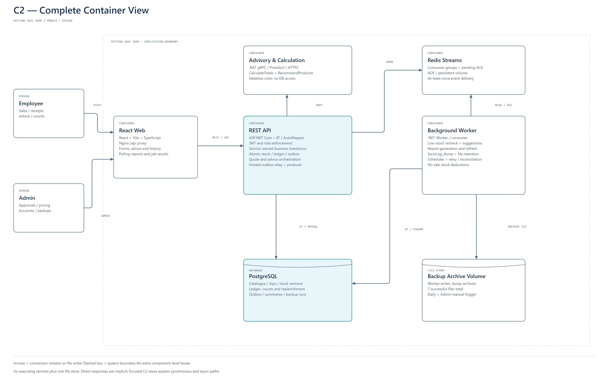
A filtered Level 2 perspective shows direct Web/API/gRPC/PostgreSQL requests and where atomic stock correctness is enforced.
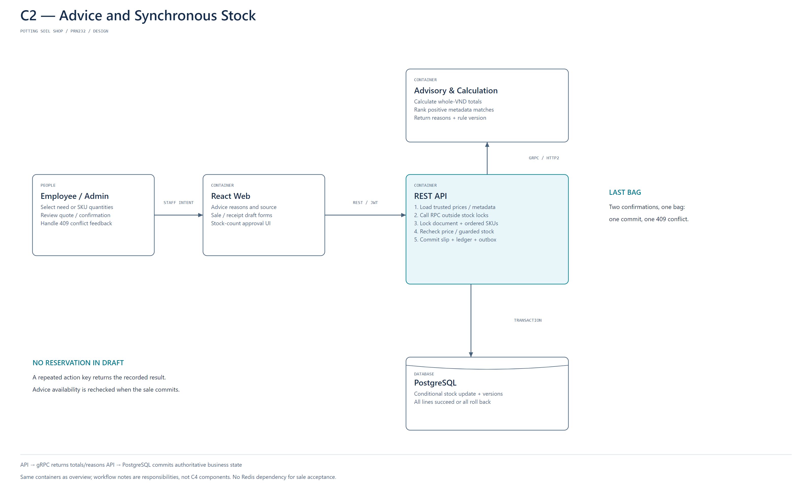
A filtered Level 2 perspective shows API outbox publishing, Redis consumption, persistent job state and Worker-owned backup archives.
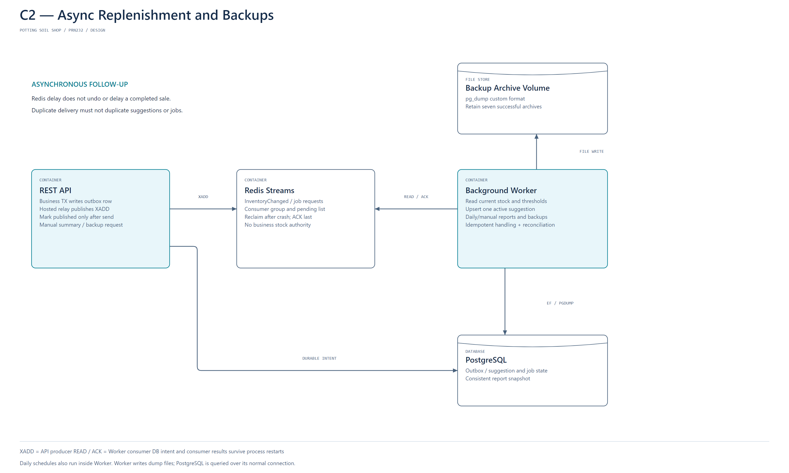
Products have SKUs; purchase and sale lines reference SKUs; receipts belong to Suppliers.
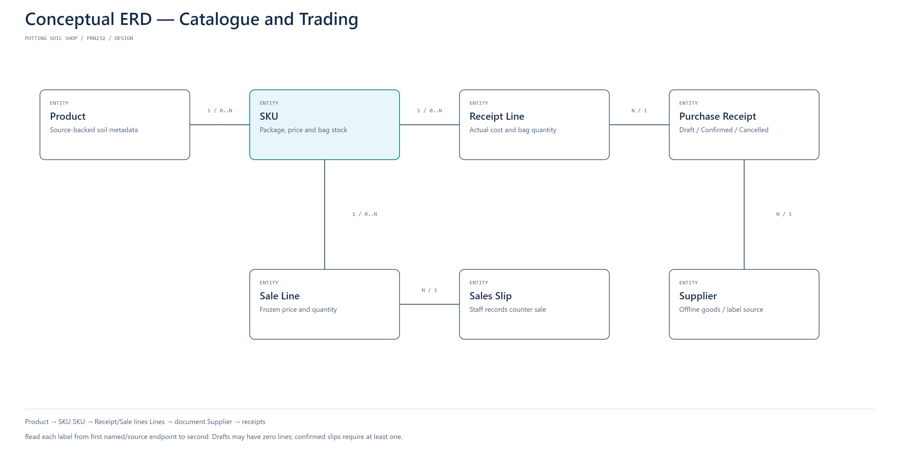
A SKU has physical counts and replenishment suggestions; accepted discrepancies become adjustments and ledger entries; products carry use tags.
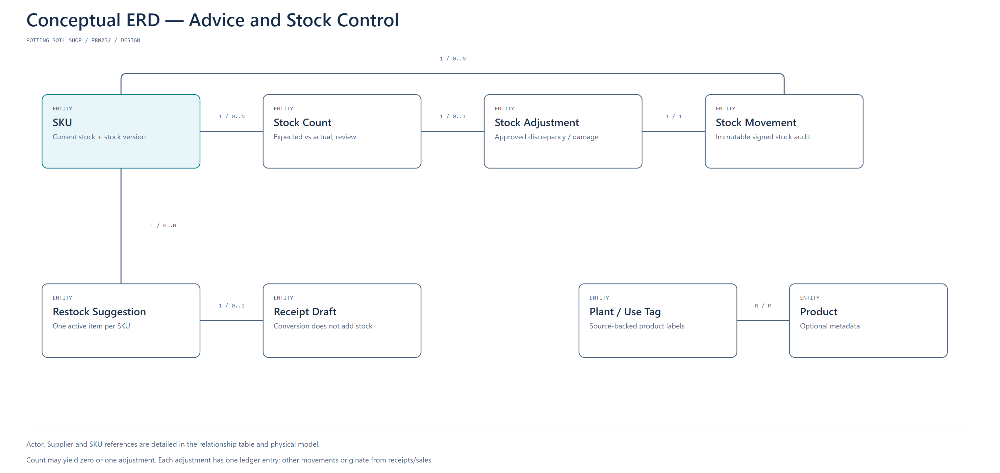
SKUs reference Products and an optional preferred Supplier.
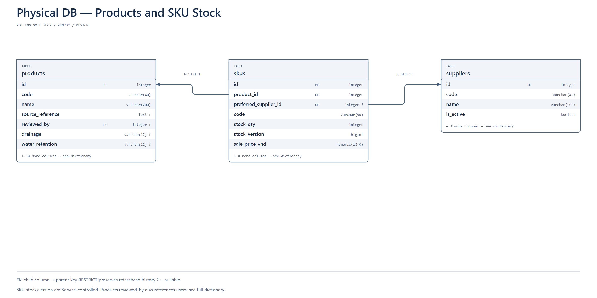
Lines reference Receipt and SKU; historical receipt headers reference Supplier and staff.
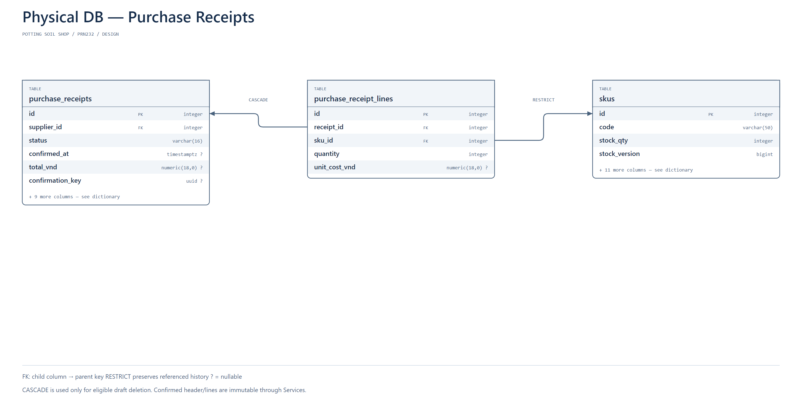
Sale lines reference a Sales document and SKU; confirmed prices remain frozen.
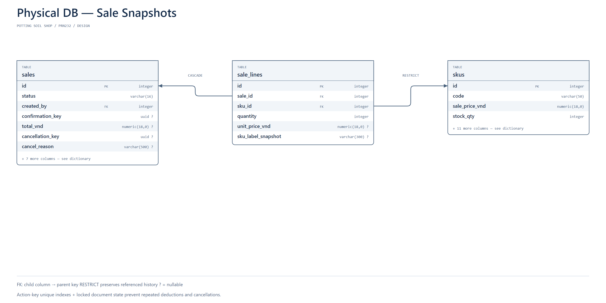
Counts and adjustments reference SKU; an approved nonzero count creates at most one adjustment.
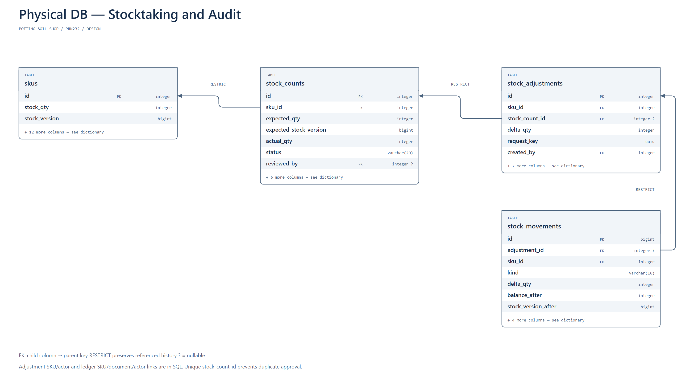
Suggestion references SKU, optional Supplier and a linked receipt draft.
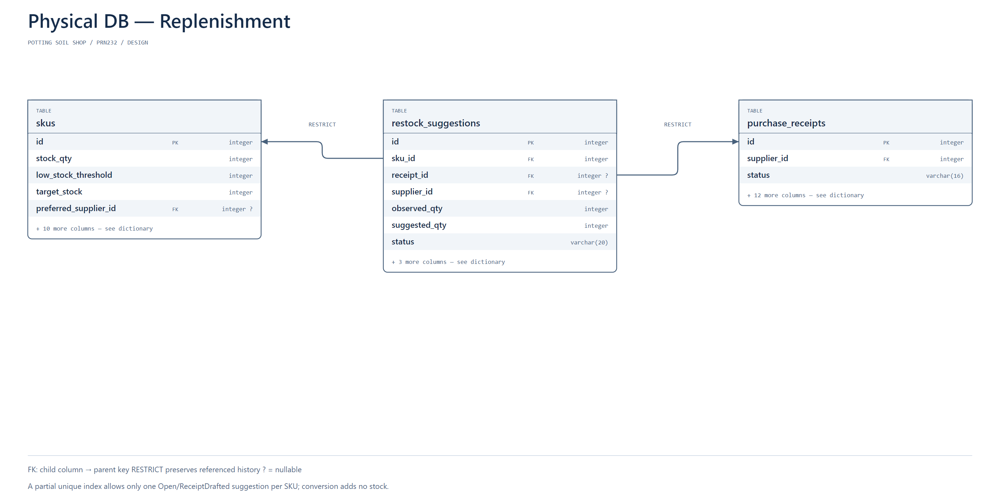
Product/tag associations support structured advisory metadata; source review belongs to staff.
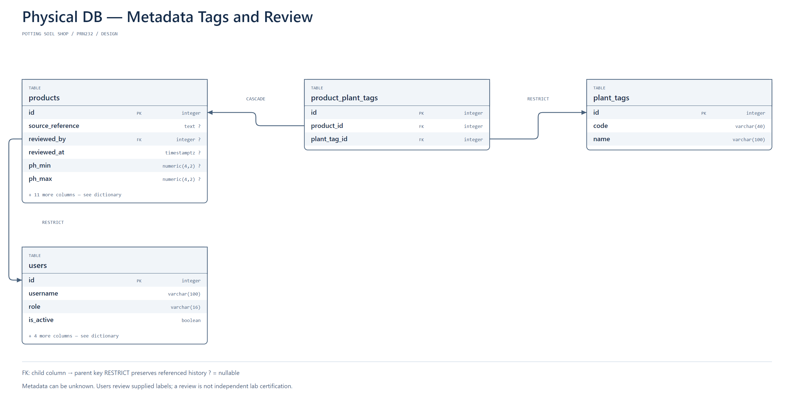
Timestamped summaries reference per-SKU snapshots; outbox/job state supports async handling.
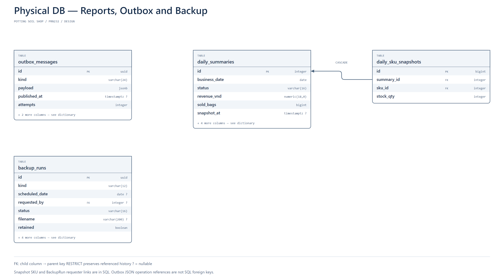